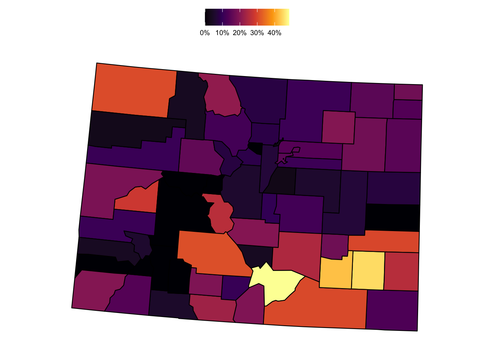

library(tidyverse)
library(tidycensus)
library(scales)
library(janitor)
library(gt)
library(usmap)
# census_api_key('INSERT KEY HERE')Introduction
In Part One, I demonstrated how to fetch data and do some basic analysis of U.S. Census data.
Setup
For this demo, I’ll use the following series:
- B01001_003: Estimate!!Total:!!Male:!!Under 5 years (all racial groups)
- B01001_027: Estimate!!Total:!!Female:!!Under 5 years (all racial groups)
- B17001_004: Estimate!!Total:!!Income in the past 12 months below poverty level:!!Male:!!Under 5 years
- B17001_018: Estimate!!Total:!!Income in the past 12 months below poverty level:!!Female:!!Under 5 years
df <- get_acs(geography = 'county',
variables = c('B01001_003', 'B01001_027', 'B17001_004', 'B17001_018'),
year = 2021,
output = 'wide')Getting data from the 2017-2021 5-year ACSTo make the data more user-friendly, I’ll update the column names of the table.
name_cols <- c('geoid', 'county_state',
'u5_male_estimate', 'u5_male_moe',
'u5_female_estimate', 'u5_female_moe',
'u5_male_pov_estimate', 'u5_male_pov_moe',
'u5_female_pov_estimate', 'u5_female_pov_moe')
colnames(df) <- name_colsAnd for this exercise, I’ll also drop the margin of error fields, since I’m not doing a statistical analysis that would require it.
df <- df %>%
select(-contains("moe"))Next, I’ll create some fields to combine gender-based poverty estimates and calculate a percent of the child population measure.
(df <- df %>%
mutate(u5_pop_total = u5_male_estimate + u5_female_estimate,
u5_pov_total = u5_male_pov_estimate + u5_female_pov_estimate,
u5_perc_in_poverty = u5_pov_total / u5_pop_total))# A tibble: 3,221 × 9
geoid county_state u5_male_estimate u5_female_estimate u5_male_pov_estimate
<chr> <chr> <dbl> <dbl> <dbl>
1 01001 Autauga Count… 1783 1535 280
2 01003 Baldwin Count… 6121 5914 468
3 01005 Barbour Count… 647 673 381
4 01007 Bibb County, … 603 593 120
5 01009 Blount County… 1818 1649 302
6 01011 Bullock Count… 283 275 37
7 01013 Butler County… 527 560 71
8 01015 Calhoun Count… 3360 3356 961
9 01017 Chambers Coun… 1034 1022 236
10 01019 Cherokee Coun… 585 504 167
# ℹ 3,211 more rows
# ℹ 4 more variables: u5_female_pov_estimate <dbl>, u5_pop_total <dbl>,
# u5_pov_total <dbl>, u5_perc_in_poverty <dbl>Mapping
The usmapp:: package makes rendering a map of the US quick and easy. Though it’s not meant to replace sf:: or packages that allow for more sophisticated maps, it does allow for a quick way to make a U.S. map. For this demo, I’ll plot the state-level poverty data that I collected and manipulated in earlier steps.
This shows that child poverty is concentrated in southern and southeastern states (as a percent of the child population).
(perc_poverty_map <- plot_usmap(regions = 'counties',
include = "CO",
data = df %>% rename(fips = geoid),
values = 'u5_perc_in_poverty') +
# scale_fill_viridis_c() +
scale_fill_viridis_c(labels = scales::percent_format()) +
labs(title = md("**Estimated child poverty in U.S. states in 2021**"),
subtitle = "as a % of the total child population under 5 y.o.",
caption = "Source: 2021 American Community Survey") %>%
theme(legend.position = 'top',
legend.title = element_blank()))
Great tables with gt::
(df_tbl <- df_2 %>%
filter(state == 'Colorado') %>%
select(county, u5_pov_total, u5_pop_total, u5_perc_in_poverty) %>%
arrange(-u5_perc_in_poverty) %>%
# mutate(u5_perc_in_poverty = u5_perc_in_poverty * 100) %>%
# gt(groupname_col = "region") %>%
gt() %>%
cols_label(county = 'County',
u5_pop_total = 'Total children < 5 y.o.',
u5_pov_total = 'Total children < 5 y.o. living in poverty in last 12 mos.',
u5_perc_in_poverty = '% of children < 5 y.o. living in poverty in last 12 mos.') %>%
# formatting numeric fields
fmt_number(columns = c(u5_pop_total, u5_pov_total), decimals = 0, use_seps = TRUE) %>%
fmt_percent(columns = u5_perc_in_poverty, decimals = 1) %>%
#add table title
tab_header(title = md("**Estimated child poverty in Colorado by county in 2021**")) %>%
tab_source_note(source_note = "Data from 2021 American Community Survey from the U.S. Census Bureau") %>%
#apply new style to all column headers
tab_style(
locations = cells_column_labels(columns = everything()),
style = list(
#thick border
cell_borders(sides = "bottom", weight = px(3)),
#make text bold
cell_text(weight = "bold")
)
) %>%
#apply different style to title
tab_style(locations = cells_title(groups = "title"),
style = list(
cell_text(weight = "bold", size = 24)
)) %>%
data_color(
columns = u5_perc_in_poverty,
palette = viridis::viridis(100)
) %>%
opt_all_caps() %>%
opt_table_font(
font = list(
google_font("Chivo"),
default_fonts()
)
) %>%
tab_options(
#remove border between column headers and title
column_labels.border.top.width = px(3),
column_labels.border.top.color = "transparent",
#remove border around the table
table.border.top.color = "transparent",
table.border.bottom.color = "transparent",
#adjust font sizes and alignment
source_notes.font.size = 12,
heading.align = "left"
)
)Estimated child poverty in Colorado by county in 2021 |
|||
|---|---|---|---|
| County | Total children < 5 y.o. living in poverty in last 12 mos. | Total children < 5 y.o. | % of children < 5 y.o. living in poverty in last 12 mos. |
| Huerfano County | 170 | 303 | 56.1% |
| Bent County | 105 | 212 | 49.5% |
| Jackson County | 9 | 20 | 45.0% |
| Rio Grande County | 227 | 623 | 36.4% |
| Las Animas County | 244 | 688 | 35.5% |
| Moffat County | 300 | 863 | 34.8% |
| Otero County | 349 | 1,086 | 32.1% |
| Delta County | 387 | 1,406 | 27.5% |
| Saguache County | 88 | 326 | 27.0% |
| Pueblo County | 2,437 | 9,396 | 25.9% |
| Conejos County | 131 | 507 | 25.8% |
| Costilla County | 23 | 105 | 21.9% |
| Prowers County | 175 | 806 | 21.7% |
| Washington County | 46 | 213 | 21.6% |
| Kiowa County | 33 | 155 | 21.3% |
| Sedgwick County | 55 | 265 | 20.8% |
| Mesa County | 1,707 | 8,376 | 20.4% |
| Hinsdale County | 7 | 35 | 20.0% |
| Montezuma County | 268 | 1,363 | 19.7% |
| Fremont County | 364 | 1,952 | 18.6% |
| Alamosa County | 188 | 1,013 | 18.6% |
| Logan County | 249 | 1,395 | 17.8% |
| Crowley County | 29 | 164 | 17.7% |
| Eagle County | 477 | 2,861 | 16.7% |
| Park County | 101 | 616 | 16.4% |
| Morgan County | 331 | 2,086 | 15.9% |
| Phillips County | 59 | 392 | 15.1% |
| Denver County | 6,011 | 40,402 | 14.9% |
| Chaffee County | 104 | 746 | 13.9% |
| Adams County | 4,834 | 34,924 | 13.8% |
| Garfield County | 558 | 4,080 | 13.7% |
| El Paso County | 5,819 | 46,752 | 12.4% |
| Summit County | 149 | 1,269 | 11.7% |
| Teller County | 102 | 874 | 11.7% |
| Yuma County | 84 | 725 | 11.6% |
| Weld County | 2,536 | 22,572 | 11.2% |
| La Plata County | 283 | 2,583 | 11.0% |
| Arapahoe County | 4,186 | 38,938 | 10.8% |
| Montrose County | 235 | 2,207 | 10.6% |
| Grand County | 58 | 577 | 10.1% |
| Gunnison County | 64 | 646 | 9.9% |
| Custer County | 4 | 42 | 9.5% |
| Boulder County | 1,324 | 14,030 | 9.4% |
| Baca County | 16 | 171 | 9.4% |
| Larimer County | 1,382 | 16,926 | 8.2% |
| Jefferson County | 2,062 | 28,894 | 7.1% |
| Lincoln County | 21 | 310 | 6.8% |
| Cheyenne County | 12 | 185 | 6.5% |
| Kit Carson County | 27 | 471 | 5.7% |
| Archuleta County | 28 | 596 | 4.7% |
| San Miguel County | 11 | 241 | 4.6% |
| Broomfield County | 146 | 3,651 | 4.0% |
| Elbert County | 38 | 1,115 | 3.4% |
| Douglas County | 551 | 19,652 | 2.8% |
| Ouray County | 5 | 189 | 2.6% |
| Rio Blanco County | 8 | 439 | 1.8% |
| Routt County | 14 | 1,035 | 1.4% |
| Clear Creek County | 3 | 289 | 1.0% |
| Dolores County | 0 | 35 | 0.0% |
| Gilpin County | 0 | 109 | 0.0% |
| Lake County | 0 | 294 | 0.0% |
| Mineral County | 0 | 24 | 0.0% |
| Pitkin County | 0 | 1,019 | 0.0% |
| San Juan County | 0 | 7 | 0.0% |
| Data from 2021 American Community Survey from the U.S. Census Bureau | |||
Conclusion
In this first tidycensus:: post, I demonstrated:
- How to fetch data from the U.S. Census Bureau
- A simple way to search for the type of data that you’re interested in exploring
- How to use some of the
tidycensus::functions and arguments to support in data wrangling - How to make a simple map using the
usmap::package - How to make a clean and visually appealing table using the
gt::package